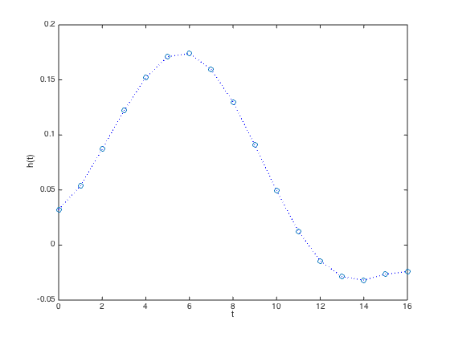
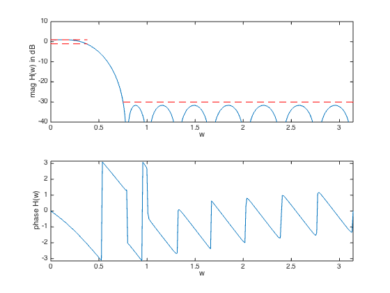

% "FIR Filter Design via Spectral Factorization and Convex Optimization" % by S.-P. Wu, S. Boyd, and L. Vandenberghe % (figures are generated) % % Designs an FIR lowpass filter using spectral factorization method where we: % - minimize the filter order % - have a constraint on the maximum passband ripple % - have a constraint on the maximum stopband attenuation % % minimize filter order n % s.t. 1/delta <= |H(w)| <= delta for w in the passband % |H(w)| <= atten_level for w in the stopband % % We change variables via spectral factorization method and get: % % minimize filter order n % s.t. (1/delta)^2 <= R(w) <= delta^2 for w in the passband % R(w) <= atten_level^2 for w in the stopband % R(w) >= 0 for all w % % where R(w) is the squared magnited of the frequency response % (and the Fourier transform of the autocorrelation coefficients r). % Variables are coeffients r. delta is the allowed passband ripple % and atten_level is the max allowed level in the stopband. % % This is a quasiconvex problem and can be solved using a bisection. % % Written for CVX by Almir Mutapcic 02/02/06 %********************************************************************* % user's filter specs (for a low-pass filter example) %********************************************************************* % filter order that is used to start the bisection (has to be feasible) max_order = 20; wpass = 0.12*pi; % passband cutoff freq (in radians) wstop = 0.24*pi; % stopband start freq (in radians) delta = 1; % max (+/-) passband ripple in dB atten = -30; % stopband attenuation level in dB %******************************************************************** % create optimization parameters %******************************************************************** m = 15*(max_order); % freq samples (rule-of-thumb) w = linspace(0,pi,m); %********************************************************************* % use bisection algorithm to solve the problem %********************************************************************* n_bot = 1; n_top = max_order; n_best = Inf; while( n_top - n_bot > 1) % try to find a feasible design for given specs n_cur = ceil( (n_top + n_bot)/2 ); % create optimization matrices % A is the matrix used to compute the power spectrum % A(w,:) = [1 2*cos(w) 2*cos(2*w) ... 2*cos(n*w)] A = [ones(m,1) 2*cos(kron(w',[1:n_cur-1]))]; % passband 0 <= w <= w_pass ind = find((0 <= w) & (w <= wpass)); % passband Ap = A(ind,:); % transition band is not constrained (w_pass <= w <= w_stop) % stopband (w_stop <= w) ind = find((wstop <= w) & (w <= pi)); % stopband As = A(ind,:); % This is the feasiblity problem: % cvx_begin quiet % variable r_cur(n_cur+1,1); % 10^(-delta/10) <= Ap * r_cur <= 10^(+delta/10); % abs( As * r_cur ) <= +10^(+atten/10); % A * r >= 0; % cvx_end % Unfortunately it seems to be a bit unreliable to solve. So we have % reformulated it as a stopband minimization. If the optimum stopband % attenuation is smaller than 10^(atten/10), then we have feasibility. % formulate and solve the feasibility linear-phase lp filter design cvx_begin quiet variables r_cur(n_cur,1); minimize( max( abs( As * r_cur ) ) ); 10^(-delta/10) <= Ap * r_cur <= 10^(+delta/10); A * r_cur >= 0; cvx_end % bisection if isnan( cvx_optval ), fprintf( 1, 'Solver failed for n = %d taps, assuming infeasible\n', n_cur ); n_bot = n_cur; elseif cvx_optval <= 10^(atten/10), % strfind(cvx_status,'Solved') % feasible fprintf(1,'Problem is feasible for n = %d taps\n',n_cur); n_top = n_cur; if n_best > n_cur, r = r_cur; end else % not feasible fprintf(1,'Problem not feasible for n = %d taps\n',n_cur); n_bot = n_cur; end end h = spectral_fact(r); n = length(r); fprintf(1,'\nOptimum number of filter taps for given specs is %d.\n',n); %******************************************************************** % plots %******************************************************************** figure(1) % FIR impulse response plot([0:n-1],h','o',[0:n-1],h','b:') xlabel('t'), ylabel('h(t)') figure(2) % frequency response H = exp(-j*kron(w',[0:n-1]))*h; % magnitude subplot(2,1,1) plot(w,20*log10(abs(H)),... [wstop pi],[atten atten],'r--',... [0 wpass],[delta delta],'r--',... [0 wpass],[-delta -delta],'r--'); axis([0,pi,-40,10]) xlabel('w'), ylabel('mag H(w) in dB') % phase subplot(2,1,2) plot(w,angle(H)) axis([0,pi,-pi,pi]) xlabel('w'), ylabel('phase H(w)')
Problem not feasible for n = 11 taps Problem not feasible for n = 16 taps Problem is feasible for n = 18 taps Problem is feasible for n = 17 taps Optimum number of filter taps for given specs is 17.
 